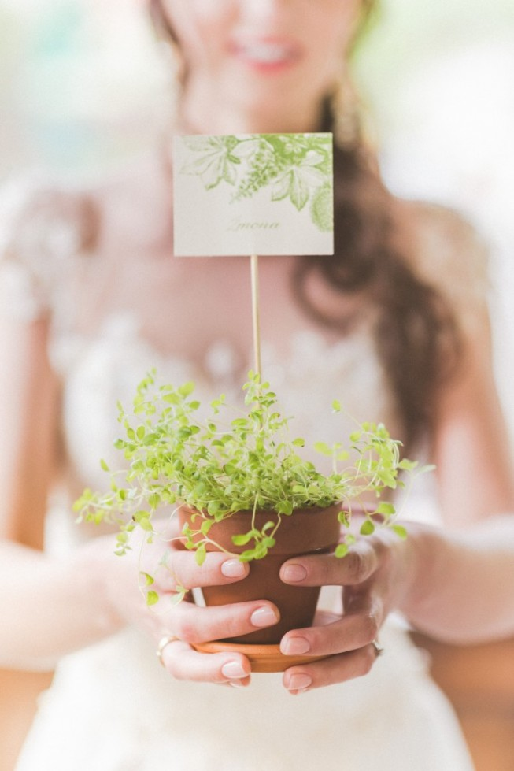

Welcome to kanceliarija
Vestuvine Kanceliarija | Bruknės vestuvės | Lithuania
2020.10.29 06:40
VESTUVINIAI KVIETIMAI IR DIZAINAS JUSU SVENTEI
DIZAINAS JŪSŲ ŠVENTEI
Vestuviniai kvietimai ir šventės spauda su meile
Mūsų kvietimai kalba apie Jaunuosius: jų stilių, pomėgius, vertybes. Čia gimsta individualūs dizainai, kuriuose galima atrasti ne tik spalvas, raides bei simbolius, bet ir dalelę jausmo, kurį vienas kitam puoselėja Jaunieji.
Piešiame iliustracijas, liejame akvarelę, pjaustome, lankstome, klijuojame ir stengiamės, jog Jaunuosius ir jų svečius visuomet pasiektų širdį džiuginanti spauda.
Bruknės
Kvietimai
Kita spauda ir kanceliarija
Bendraukime, susitikime
info@bruknesvestuves.lt
Tel: +370 604 68100
Naugarduko g. 41A, Vilnius
Visada galite užsukti pas mus į studiją. Paplepėsime, išgersime kavos, pasklaidysime kvietimus, atrasime būtent Jums tinkamiausius.
Juk čia - tik dalis mūsų darbų.
Lauksime žinutės ar skambučio - sutarkime dėl susimatymo!
© 2020 Bruknės vestuvės
MES
KVIETIMAI
KITA SPAUDA
TINKLARAŠTIS
KONTAKTAI
More
